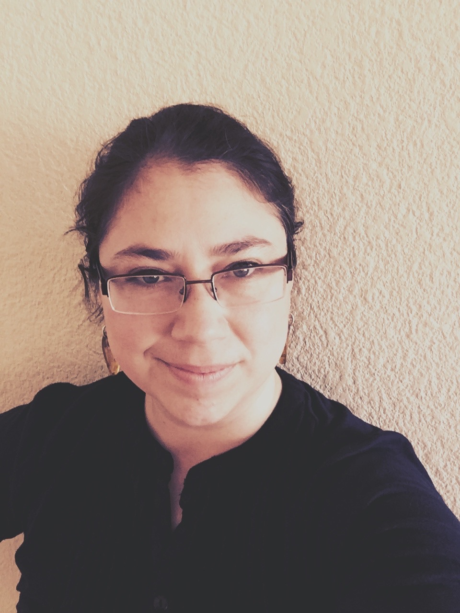

|
 |
Julia A. PalaciosI am a statistician interested in mathematical models in evolutionary genomics and estimation of relevant parameters in this field. I am also very interested in more general stochastic processes and the development of efficient estimation methods that would have an impact in public health. Postdoctoral Researcher in the Wakeley Lab and the Ramachandran Lab Department of Ecology and Evolutionary Biology Brown University 80 Waterman Street Providence RI 02912 Office at Brown: BioMed Center 505 Phone: 1-401-863-2108 email: Julia_Palacios " " Brown.edu Department of Organismic and Evolutionary Biology Harvard University Biological Lab, Wakeley Lab 16 Divinity Ave Cambridge, MA 02138 Mail Drop: H04325 Office at Harvard: Bio Lab 4100B email: juliapalaciosroman " " fas.harvard.edu |
I am a statistician interested in mathematical models in evolutionary genomics and estimation of relevant parameters in this field. I am also very interested in more general stochastic processes and the development of efficient estimation methods that would have an impact in public health.
I finished my Ph.D. in the Statistics Department of the University of Washington, Seattle in 2013. I worked under the supervision of Vladimir Minin on the estimation of Effective Population Sizes from gene sequences using Gaussian Processes
I joined the Ramachandran Lab and the Wakeley Lab as a postdoc. I am working on Bayesian Nonparametric Inference of evolutionary parameters from genomic data.